This is an example of the lecture on estimating price elasticity via the model of linear regression with interaction terms using data for orange juice sales. The example is taken from the book, “Business Data Science: Combining Machine Learning and Economics to Optimize, Automate, and Accelerate Business Decisions,” and modified by Byeong-Hak Choe.
Price elasticity of demand measures how sensitive the quantity demanded is to its price.
The concept of the elasticity plays an important role in industries.
Marketers need to understand how consumers are sensitive to fluctuations in price.
# install.packages("") # in case you need to install the following R packages
library(tidyverse) # ggplot and more
theme_set(theme_minimal()) # minimal theme for ggplot
library(skimr) # a better summary of data
library(stargazer) # regression tables##
## Please cite as:## Hlavac, Marek (2018). stargazer: Well-Formatted Regression and Summary Statistics Tables.## R package version 5.2.2. https://CRAN.R-project.org/package=stargazerlibrary(moderndive) # geom_parallel_slopes()We will use weekly sales data for orange juice (OJ) from Dominick’s grocery stores in the 1990s.
oj <- read.table(
'https://bcecon.github.io/dominick_oj.csv',
sep = ',',
header = TRUE,
stringsAsFactor = TRUE
)head(oj)levels() prints out the categories of the factor variable.
levels(oj$brand)## [1] "dominicks" "minute.maid" "tropicana"skim() gives an output of summary statistics with more information including standard deviations, missing values, number of categories for character variables, and histograms.
skim(oj)| Name | oj |
| Number of rows | 28947 |
| Number of columns | 4 |
| _______________________ | |
| Column type frequency: | |
| factor | 1 |
| numeric | 3 |
| ________________________ | |
| Group variables | None |
Variable type: factor
| skim_variable | n_missing | complete_rate | ordered | n_unique | top_counts |
|---|---|---|---|---|---|
| brand | 0 | 1 | FALSE | 3 | dom: 9649, min: 9649, tro: 9649 |
Variable type: numeric
| skim_variable | n_missing | complete_rate | mean | sd | p0 | p25 | p50 | p75 | p100 | hist |
|---|---|---|---|---|---|---|---|---|---|---|
| sales | 0 | 1 | 17312.21 | 27477.66 | 64.00 | 4864.00 | 8384.00 | 17408.00 | 716416.00 | ▇▁▁▁▁ |
| price | 0 | 1 | 2.28 | 0.65 | 0.52 | 1.79 | 2.17 | 2.73 | 3.87 | ▁▆▇▅▂ |
| feat | 0 | 1 | 0.24 | 0.43 | 0.00 | 0.00 | 0.00 | 0.00 | 1.00 | ▇▁▁▁▂ |
It is better to use a logarithmic scale when percent change matters.
ggplot(data = oj) +
geom_boxplot( aes( y = log(price), color = brand )) +
theme(axis.text.x = element_blank(), axis.ticks = element_blank())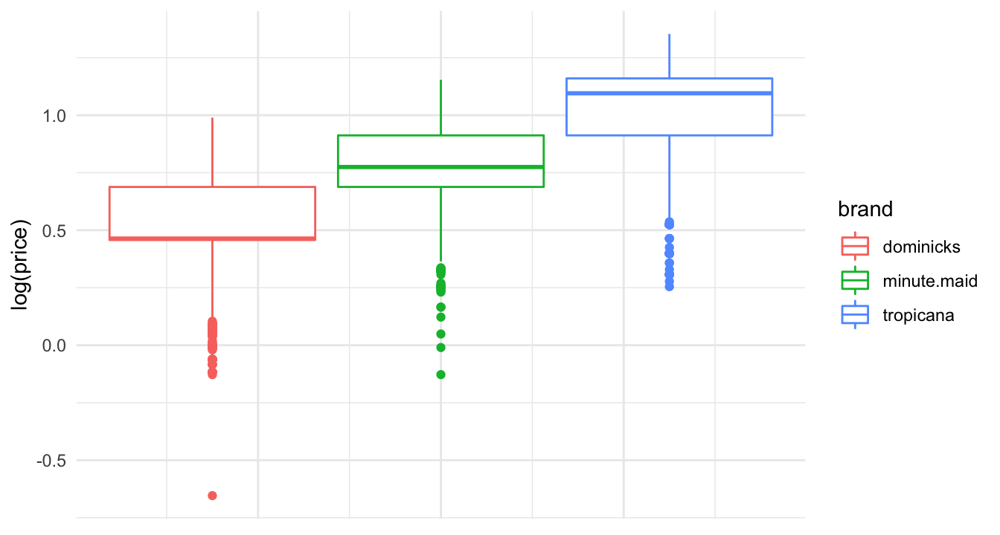
ggplot(data = oj) +
geom_boxplot( aes( y = log(sales), color = brand )) +
theme(axis.text.x = element_blank(), axis.ticks = element_blank())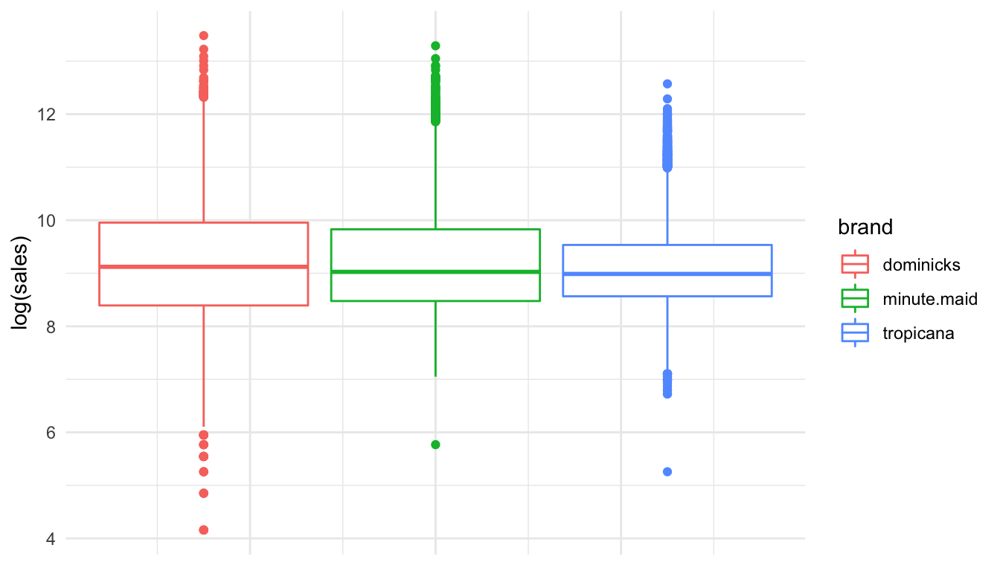
ggplot(data = oj, aes( x = log(price), y = log(sales),
color = brand )) +
geom_point( alpha = .25 ) 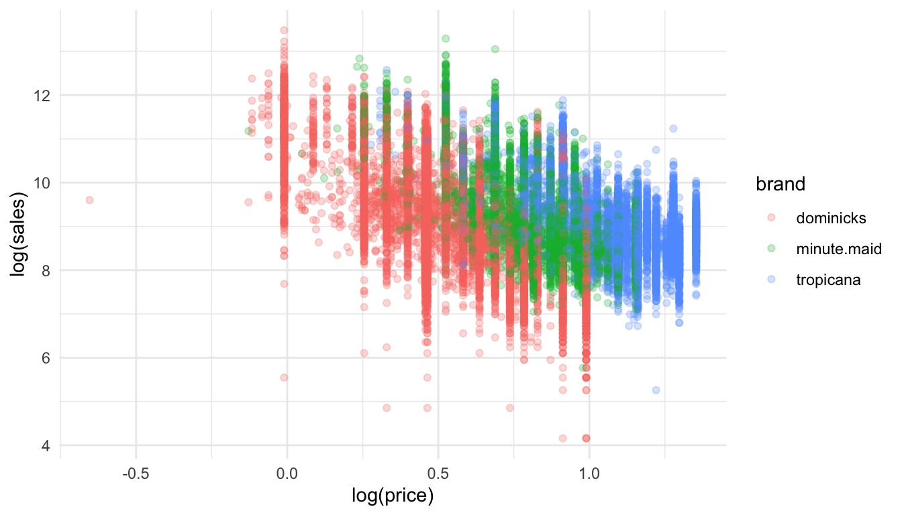
The regression model for price elasticity of OJ demand can be written as:
Here \(\alpha_{{brand}}\) is shorthand for a separate indicator for each OJ brand:
By the property of natural log, \(\beta\) measures the price elasticity of OJ demand:
reg_oj1 <- lm(log(sales) ~ log(price) + brand,
data=oj)
stargazer(reg_oj1, type = "html", omit = c("Constant"))| Dependent variable: | |
| log(sales) | |
| log(price) | -3.139*** |
| (0.023) | |
| brandminute.maid | 0.870*** |
| (0.013) | |
| brandtropicana | 1.530*** |
| (0.016) | |
| Observations | 28,947 |
| R2 | 0.394 |
| Adjusted R2 | 0.394 |
| Residual Std. Error | 0.794 (df = 28943) |
| F Statistic | 6,275.074*** (df = 3; 28943) |
| Note: | p<0.1; p<0.05; p<0.01 |
ggplot(data = oj, aes(x = log(price), y = log(sales),
color = brand )) +
geom_point(size = .75, alpha = 0.25) +
geom_parallel_slopes()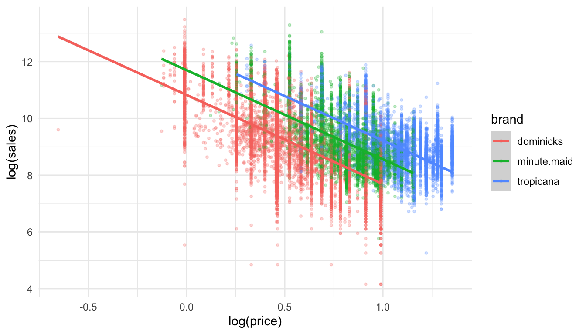
How does consumer price sensitivity change across brands?
The new regression model can be written as:
Here \(\beta_{{brand}}\) is shorthand for the brand-specific price elasticity:
reg_oj2 <- lm(log(sales) ~ log(price)*brand,
data=oj)
stargazer(reg_oj1, reg_oj2, type = "html", omit = c("Constant"))| Dependent variable: | ||
| log(sales) | ||
| (1) | (2) | |
| log(price) | -3.139*** | -3.378*** |
| (0.023) | (0.036) | |
| brandminute.maid | 0.870*** | 0.888*** |
| (0.013) | (0.042) | |
| brandtropicana | 1.530*** | 0.962*** |
| (0.016) | (0.046) | |
| log(price):brandminute.maid | 0.057 | |
| (0.057) | ||
| log(price):brandtropicana | 0.666*** | |
| (0.054) | ||
| Observations | 28,947 | 28,947 |
| R2 | 0.394 | 0.398 |
| Adjusted R2 | 0.394 | 0.398 |
| Residual Std. Error | 0.794 (df = 28943) | 0.791 (df = 28941) |
| F Statistic | 6,275.074*** (df = 3; 28943) | 3,823.404*** (df = 5; 28941) |
| Note: | p<0.1; p<0.05; p<0.01 | |
ggplot(data = oj, aes(x = log(price), y = log(sales),
color = brand )) +
geom_point(size = .75, alpha = 0.25) +
geom_smooth(method = lm, se=FALSE)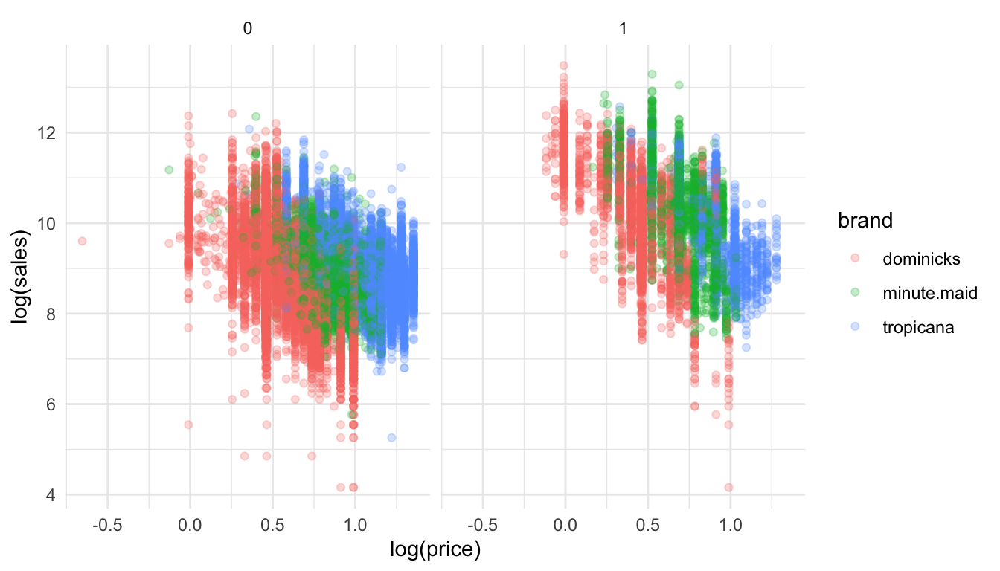
How does consumer price sensitivity change with advertisement?
The new regression model can be written as:
Here \(\beta_{{brand,feat}}\) measures the brand-feat-specific price elasticity:
reg_oj3 <- lm(log(sales) ~ log(price)*brand*feat,
data=oj)
stargazer(reg_oj1, reg_oj2, reg_oj3, type = "html", omit = c("Constant"))| Dependent variable: | |||
| log(sales) | |||
| (1) | (2) | (3) | |
| log(price) | -3.139*** | -3.378*** | -2.774*** |
| (0.023) | (0.036) | (0.039) | |
| brandminute.maid | 0.870*** | 0.888*** | 0.047 |
| (0.013) | (0.042) | (0.047) | |
| brandtropicana | 1.530*** | 0.962*** | 0.708*** |
| (0.016) | (0.046) | (0.051) | |
| feat | 1.094*** | ||
| (0.038) | |||
| log(price):brandminute.maid | 0.057 | 0.783*** | |
| (0.057) | (0.061) | ||
| log(price):brandtropicana | 0.666*** | 0.736*** | |
| (0.054) | (0.057) | ||
| log(price):feat | -0.471*** | ||
| (0.074) | |||
| brandminute.maid:feat | 1.173*** | ||
| (0.082) | |||
| brandtropicana:feat | 0.785*** | ||
| (0.099) | |||
| log(price):brandminute.maid:feat | -1.109*** | ||
| (0.122) | |||
| log(price):brandtropicana:feat | -0.986*** | ||
| (0.124) | |||
| Observations | 28,947 | 28,947 | 28,947 |
| R2 | 0.394 | 0.398 | 0.535 |
| Adjusted R2 | 0.394 | 0.398 | 0.535 |
| Residual Std. Error | 0.794 (df = 28943) | 0.791 (df = 28941) | 0.695 (df = 28935) |
| F Statistic | 6,275.074*** (df = 3; 28943) | 3,823.404*** (df = 5; 28941) | 3,031.232*** (df = 11; 28935) |
| Note: | p<0.1; p<0.05; p<0.01 | ||
ggplot(data = oj, aes(x = log(price), y = log(sales), color = brand )) +
geom_point(size = .75, alpha = 0.25) +
geom_smooth(method=lm) +
facet_grid( . ~ feat)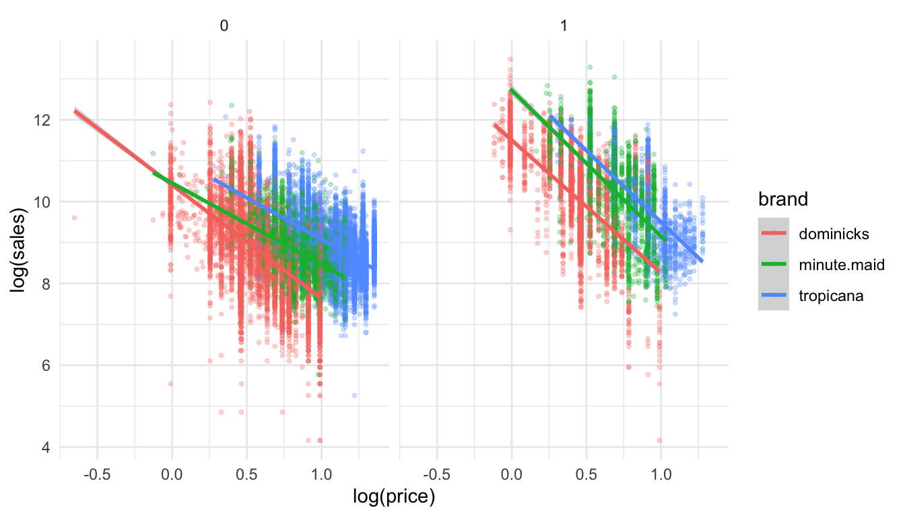
| dominicks | minute.maid | tropicana | |
|---|---|---|---|
| Model 1 | -3.1 | -3.1 | -3.1 |
| Model 2 | -3.4 | -3.3 | -2.7 |
| Model 3 w/ no ad | -2.8 | -2.0 | -2.0 |
| Model 3 w/ ad | -3.2 | -3.6 | -3.5 |
Which model is better?
Which model is more realistic?
Why does being featured always lead to more price sensitivity?
by_brand <- group_by(oj, brand, feat)
salestable <- mutate(by_brand,
sales_tot =
sum(sales, na.rm = TRUE)
) %>%
select(sales_tot, brand, feat) %>%
unique()
salestable <- salestable %>% group_by(feat) %>%
mutate(sales_prop = sales_tot/sum(sales_tot))
ggplot(data = salestable) +
geom_bar(mapping = aes(x = factor(feat), y = sales_prop,
fill = brand), stat = "identity") +
xlab("feat") + ylab("proportion of sales") + scale_x_discrete(breaks=c(0, 1), labels=c("no ad", "ad"))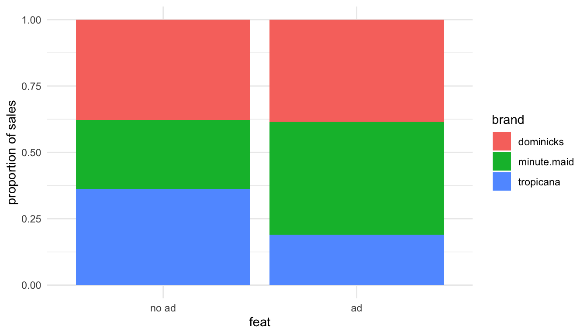
ggplot(data = oj) +
geom_boxplot( aes( y = log(price), color = brand )) +
facet_grid( . ~ feat) +
theme(axis.text.x = element_blank(), axis.ticks = element_blank())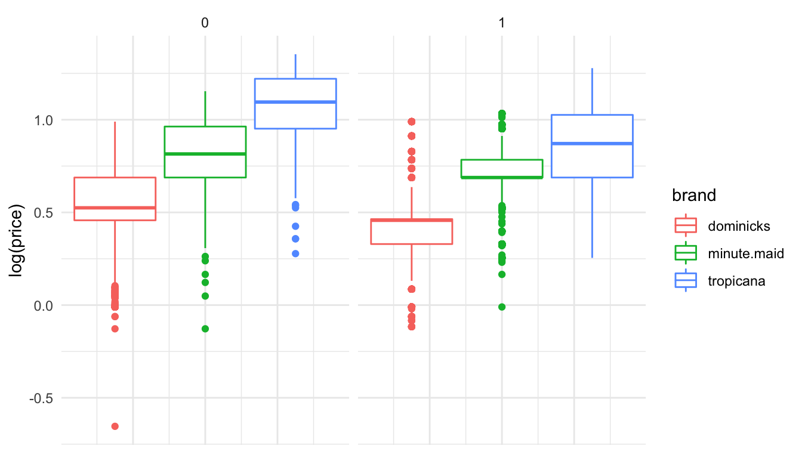
ggplot(data = oj) +
geom_boxplot( aes( y = log(sales), color = brand )) +
facet_grid( . ~ feat) +
theme(axis.text.x = element_blank(), axis.ticks = element_blank())ggplot(data = oj, aes( x = log(price), y = log(sales),
color = brand )) +
geom_point( alpha = .25 ) +
facet_grid( . ~ feat)Which model is better?
On average, are the predictions correct?
Are there systematic errors in prediction?
Predicted log of sales can be calculated as follows:
oj$predLogSales1 <- predict(reg_oj1, newdata = oj)
oj$predLogSales2 <- predict(reg_oj2, newdata = oj)
oj$predLogSales3 <- predict(reg_oj3, newdata = oj)# Residual plot 1
ggplot(data = oj, aes(x = predLogSales1, y = log(sales) - predLogSales1 )) +
geom_point(alpha = 0.2, color = "orange") + geom_smooth(color = "darkblue") +
geom_line(aes(x = predLogSales1, y = 0), color = "red", linetype = 2) +
xlab("prediction") + ylab("residual error (actual prediction)")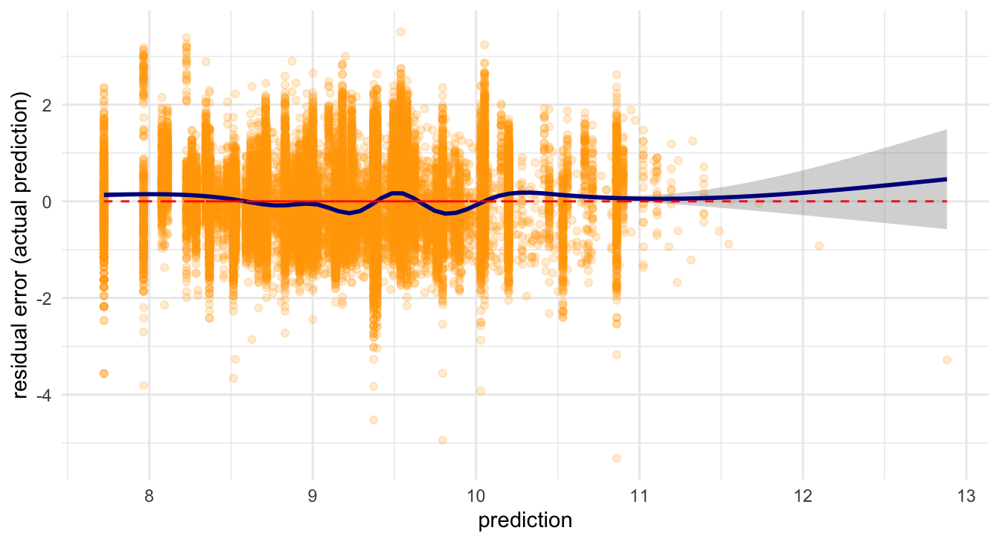
# Residual plot 2
ggplot(data = oj, aes(x = predLogSales2, y = log(sales) - predLogSales2 )) +
geom_point(alpha = 0.2, color = "orange") + geom_smooth(color = "darkblue") +
geom_line(aes(x = predLogSales2, y = 0), color = "red", linetype = 2) +
xlab("prediction") + ylab("residual error (actual prediction)")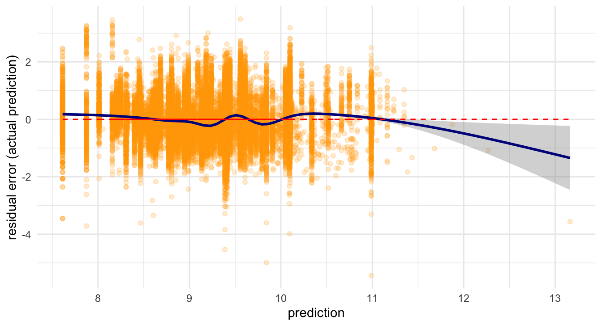
# Residual plot 3
ggplot(data = oj, aes(x = predLogSales3, y = log(sales) - predLogSales3 )) +
geom_point(alpha = 0.2, color = "orange") + geom_smooth(color = "darkblue") +
geom_line(aes(x = predLogSales3, y = 0), color = "red", linetype = 2) +
xlab("prediction") + ylab("residual error (actual prediction)")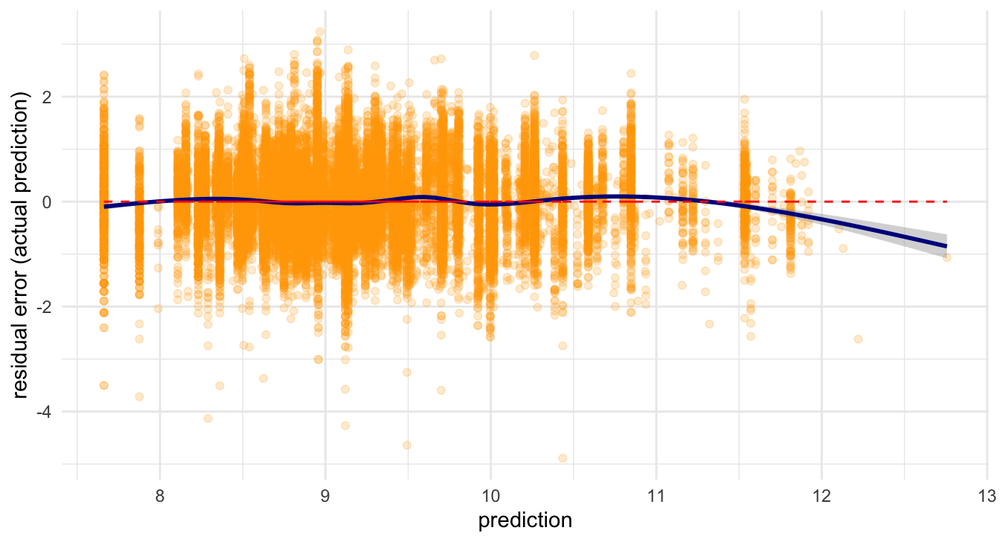